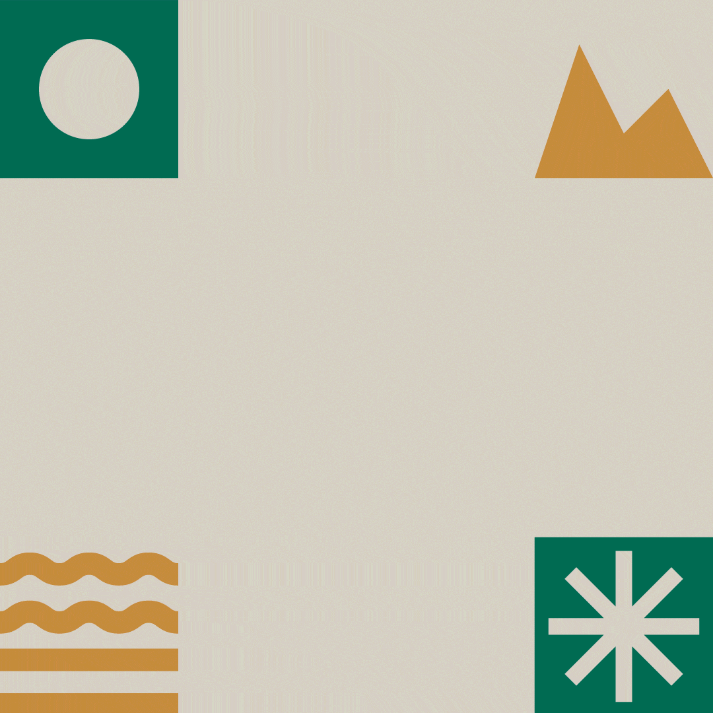

Logo Animations
Rodrygo Design can bring your logo to life and make it dynamic. Using After Effects, I can animate logos and create animations of any kind. For example, I animated the logo for "El Palmeral de Orihuela" and also for "Olé", the largest artichoke export company in the Vega Baja region. These projects showcase my ability to transform static designs into engaging, animated visuals that captivate audiences.
